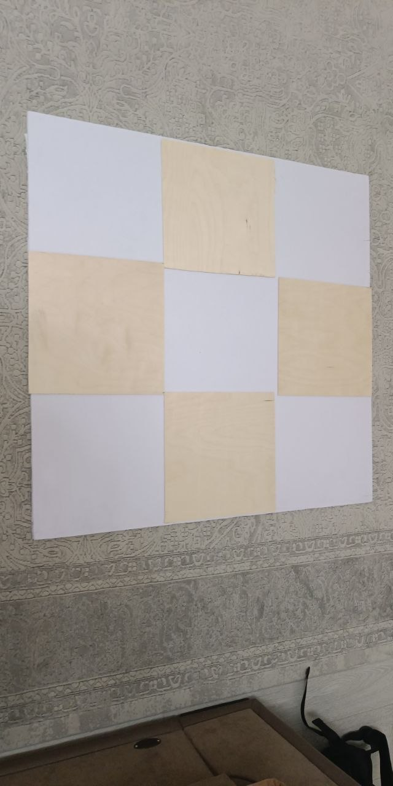
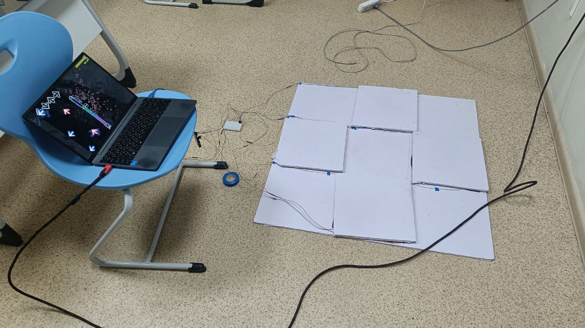
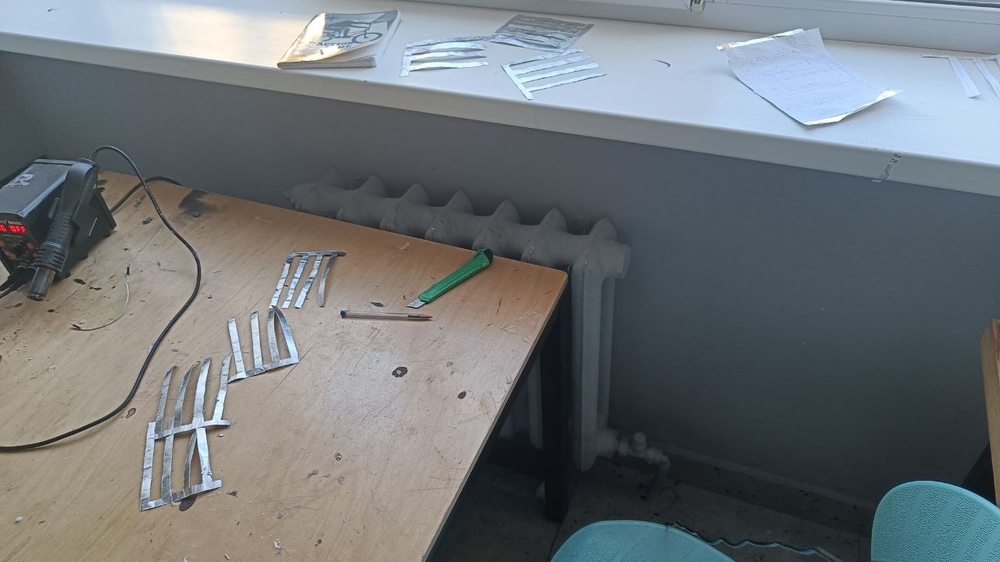
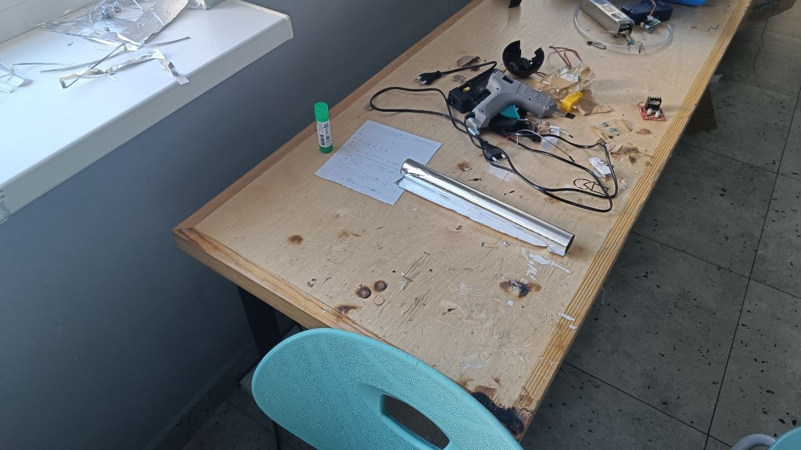
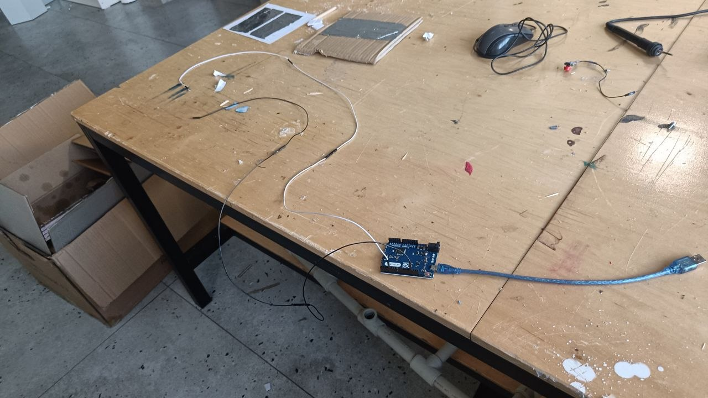
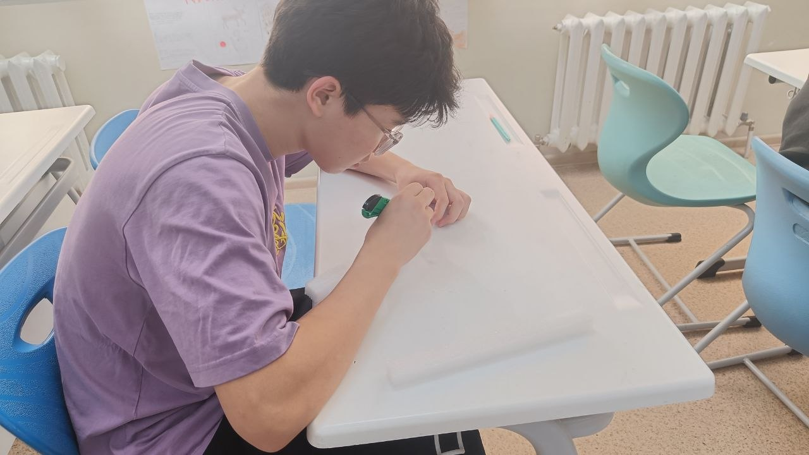
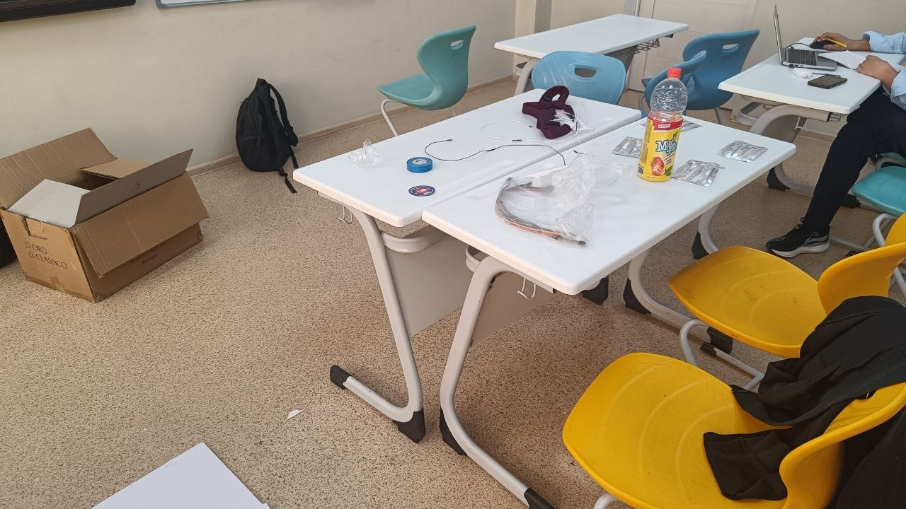

Final version
In final version we will add colorful arrows on buttons and hide arduino in box. Also, we wil try to find long wire to connect Arduino with computer.
Evidence of work





Reflection
During this project, we learned many interesting things and become more responsible. I hope, this new knoowledge will help us in future and we will not make the same mistakes in future projects and tasks.